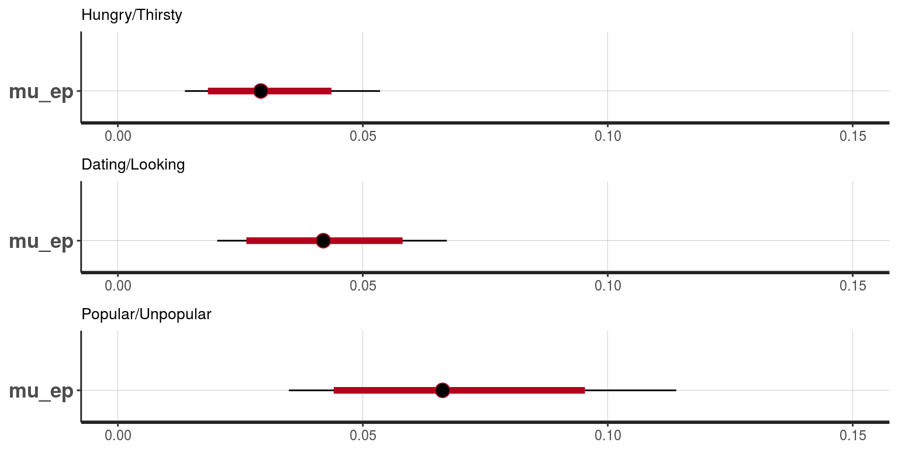
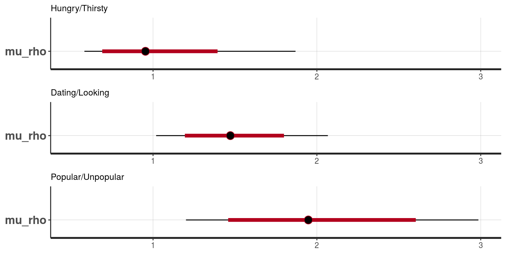
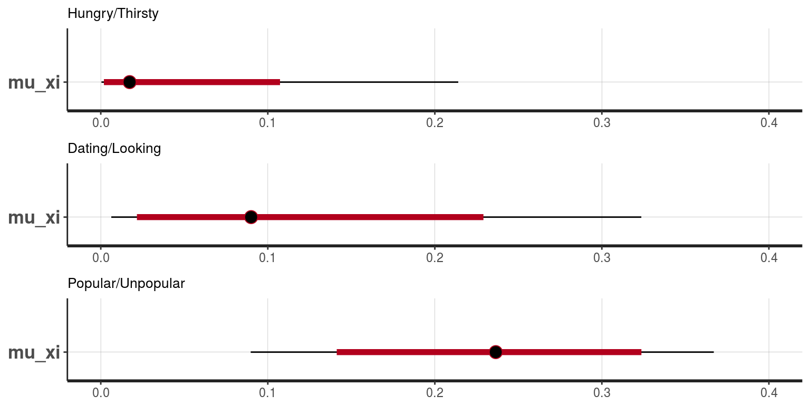

Estimates from TDS-II SPLiT task
John C Flournoy
Tue May 23 15:25:54 2017
## Loading tidyverse: ggplot2
## Loading tidyverse: tibble
## Loading tidyverse: tidyr
## Loading tidyverse: readr
## Loading tidyverse: purrr
## Loading tidyverse: dplyr## Conflicts with tidy packages ----------------------------------------------## filter(): dplyr, stats
## lag(): dplyr, stats## Loading required package: StanHeaders## rstan (Version 2.15.1, packaged: 2017-04-19 05:03:57 UTC, GitRev: 2e1f913d3ca3)## For execution on a local, multicore CPU with excess RAM we recommend calling
## rstan_options(auto_write = TRUE)
## options(mc.cores = parallel::detectCores())##
## Attaching package: 'rstan'## The following object is masked from 'package:tidyr':
##
## extract## Parsed with column specification:
## cols(
## `subject-name` = col_integer(),
## gender = col_integer(),
## age = col_double(),
## iq = col_integer()
## )## Joining, by = c("id", "pressed_r", "outcome", "block", "proportion")Bayesin estimation of a Rescorla-Wagner learning model
At the moment, there is a separate model for each For now, running in separate models per condition. In the future these will be brought together under a single model that also estimates the age trajectories and correlations with individual difference measures.
## Adding missing grouping variables: `condition`
## Adding missing grouping variables: `condition`
## Adding missing grouping variables: `condition`## Joining, by = "id"I take advantage of the go-nogo model implemented in the hBayesDM package, and specifically the first parameterization. This parameterization follows Guitart-Masip et al. (2012)
The process is encoded so that an action weight governs the probability of choosing a particular response (the right arrow key rather than the left) for a particular stimulus. In the case of this model, the action weight \(W(a,s)\) is just \(Q(a,s)\) as described below:
\[ Q_{t}(a_{t},s_{t}) = Q_{t-1}(a_{t},s_{t}) + \epsilon(\rho r_{t} - Q_{t-1}(a_{t},s_{t})) \]
There is an additional irreducible noise parameter not shown in the above equation.
The parameters were estimated using Stan, yeilding 3000 samples post-warmup. Inferences below are made on the parameter values in these 3000 samples.
Guitart-Masip, M., Huys, Q. J. M., Fuentemilla, L., Dayan, P., Duzel, E., & Dolan, R. J. (2012). Go and no-go learning in reward and punishment: Interactions between affect and effect. Neuroimage, 62(1), 154–166.
htRW_m1_fname <- file.path('/data/jflournoy/split/bayes/', 'htRW_m1_stan.RDS')
if(file.exists(htRW_m1_fname)){
htRW_m1_fit <- readRDS(htRW_m1_fname)
} else {
htRW_m1_fit <- stan(file = '~/code_new/split_bayes/gng_m1_reg.stan',
data = ht_stan_data,
iter = 1000, chains = 6, control = list(adapt_delta = 0.90), init = genInitListFunc(ht_stan_data$N))
saveRDS(htRW_m1_fit, htRW_m1_fname)
}
dlRW_m1_fname <- file.path('/data/jflournoy/split/bayes/', 'dlRW_m1_stan.RDS')
if(file.exists(dlRW_m1_fname)){
dlRW_m1_fit <- readRDS(dlRW_m1_fname)
} else {
dlRW_m1_fit <- stan(file = '~/code_new/split_bayes/gng_m1_reg.stan',
data = dl_stan_data,
iter = 1000, chains = 6, control = list(adapt_delta = 0.90), init = genInitListFunc(dl_stan_data$N))
saveRDS(dlRW_m1_fit, dlRW_m1_fname)
}
puRW_m1_fname <- file.path('/data/jflournoy/split/bayes/', 'puRW_m1_stan.RDS')
if(file.exists(puRW_m1_fname)){
puRW_m1_fit <- readRDS(puRW_m1_fname)
} else {
puRW_m1_fit <- stan(file = '~/code_new/split_bayes/gng_m1_reg.stan',
data = pu_stan_data,
iter = 1000, chains = 6, control = list(adapt_delta = 0.90), init = genInitListFunc(pu_stan_data$N))
saveRDS(puRW_m1_fit, puRW_m1_fname)
}
stan_trace(htRW_m1_fit, pars = c('mu_p'))
# stan_trace(htRW_m1_fit, pars = c('mu_p','sigma'))
# stan_plot(htRW_m1_fit, pars = c('mu_p'))
# stan_plot(htRW_m1_fit, pars = c('mu_xi', 'mu_ep', 'mu_rho'))
# stan_plot(htRW_m1_fit, pars = c('mu_ep'))
# stan_plot(htRW_m1_fit, pars = c('sigma'))
# stan_plot(htRW_m1_fit, pars = c('ep_pr'))
# stan_plot(htRW_m1_fit, pars = c('rho_pr'))
# stan_plot(htRW_m1_fit, pars = c('xi_pr'))Mean parameter estimates
ep
That is, learning rate.
multiplot(stan_plot(htRW_m1_fit, pars = c('mu_ep'))+lims(x=c(0,.15))+labs(subtitle='Hungry/Thirsty'),
stan_plot(dlRW_m1_fit, pars = c('mu_ep'))+lims(x=c(0,.15))+labs(subtitle='Dating/Looking'),
stan_plot(puRW_m1_fit, pars = c('mu_ep'))+lims(x=c(0,.15))+labs(subtitle='Popular/Unpopular'),
cols=1)## ci_level: 0.8 (80% intervals)## outer_level: 0.95 (95% intervals)## Scale for 'x' is already present. Adding another scale for 'x', which
## will replace the existing scale.## ci_level: 0.8 (80% intervals)## outer_level: 0.95 (95% intervals)## Scale for 'x' is already present. Adding another scale for 'x', which
## will replace the existing scale.## ci_level: 0.8 (80% intervals)## outer_level: 0.95 (95% intervals)## Scale for 'x' is already present. Adding another scale for 'x', which
## will replace the existing scale.
rho
That is, inverse temperature.
multiplot(stan_plot(htRW_m1_fit, pars = c('mu_rho'))+labs(subtitle='Hungry/Thirsty')+lims(x=c(.5,3)),
stan_plot(dlRW_m1_fit, pars = c('mu_rho'))+labs(subtitle='Dating/Looking')+lims(x=c(.5,3)),
stan_plot(puRW_m1_fit, pars = c('mu_rho'))+labs(subtitle='Popular/Unpopular')+lims(x=c(.5,3)),
cols=1)## ci_level: 0.8 (80% intervals)## outer_level: 0.95 (95% intervals)## Scale for 'x' is already present. Adding another scale for 'x', which
## will replace the existing scale.## ci_level: 0.8 (80% intervals)## outer_level: 0.95 (95% intervals)## Scale for 'x' is already present. Adding another scale for 'x', which
## will replace the existing scale.## ci_level: 0.8 (80% intervals)## outer_level: 0.95 (95% intervals)## Scale for 'x' is already present. Adding another scale for 'x', which
## will replace the existing scale.
xi
That is, noise
multiplot(stan_plot(htRW_m1_fit, pars = c('mu_xi'))+labs(subtitle='Hungry/Thirsty')+lims(x=c(0,.4)),
stan_plot(dlRW_m1_fit, pars = c('mu_xi'))+labs(subtitle='Dating/Looking')+lims(x=c(0,.4)),
stan_plot(puRW_m1_fit, pars = c('mu_xi'))+labs(subtitle='Popular/Unpopular')+lims(x=c(0,.4)),
cols=1)## ci_level: 0.8 (80% intervals)## outer_level: 0.95 (95% intervals)## Scale for 'x' is already present. Adding another scale for 'x', which
## will replace the existing scale.## ci_level: 0.8 (80% intervals)## outer_level: 0.95 (95% intervals)## Scale for 'x' is already present. Adding another scale for 'x', which
## will replace the existing scale.## ci_level: 0.8 (80% intervals)## outer_level: 0.95 (95% intervals)## Scale for 'x' is already present. Adding another scale for 'x', which
## will replace the existing scale.
## used (Mb) gc trigger (Mb) max used (Mb)
## Ncells 1358951 72.6 3205452 171.2 3205452 171.2
## Vcells 321098211 2449.8 1042598224 7954.4 970833002 7406.9Correlations with age
First, make a function to create plots….
cor_dist_plot <- function(stan_samples, tocor, labslist = list(title='Correlation Density', x='', y='')){
nsamples <- dim(stan_samples)[1]
manycors <- unlist(lapply(1:nsamples, function(x){
cor(stan_samples[x,],tocor)
}))
corplot <- data_frame(cor=manycors) %>%
do(data.frame(t(quantile(.$cor,probs = c(.025,.1,.5,.9,.975))))) %>%
ggplot(aes(x = X50., y=1))+
geom_density(aes(x = cor, y = ..density..), data = data_frame(cor = manycors))+
geom_errorbarh(aes(xmin=X2.5.,xmax=X97.5.), size=1, height=0,col='red')+
geom_errorbarh(aes(xmin=X10.,xmax=X90.), size=4, height=0,col='red')+
geom_point(size=5,col='black')+
theme(panel.background = element_blank())+
labs(labslist)
corplot
}Age cor with ep
multiplot(cor_dist_plot(qnorm(htRW_m1_fit_extract$ep), stanAges$age,
labslist = list(title = 'Hungry/Thirsty', x = 'Correlation of ep with age', y=''))+
lims(x=c(-.5,.5)),
cor_dist_plot(qnorm(dlRW_m1_fit_extract$ep), stanAges$age,
labslist = list(title = 'Dating/Looking', x = 'Correlation of ep with age', y=''))+
lims(x=c(-.5,.5)),
cor_dist_plot(qnorm(puRW_m1_fit_extract$ep), stanAges$age,
labslist = list(title = 'Popular/Unpopular', x = 'Correlation of ep with age', y=''))+
lims(x=c(-.5,.5)))
Age cor with rho
multiplot(cor_dist_plot(log(htRW_m1_fit_extract$rho), stanAges$age,
labslist = list(title = 'Hungry/Thirsty', x = 'Correlation of rho with age', y=''))+
lims(x=c(-.5,.5)),
cor_dist_plot(log(dlRW_m1_fit_extract$rho), stanAges$age,
labslist = list(title = 'Dating/Looking', x = 'Correlation of rho with age', y=''))+
lims(x=c(-.5,.5)),
cor_dist_plot(log(puRW_m1_fit_extract$rho), stanAges$age,
labslist = list(title = 'Popular/Unpopular', x = 'Correlation of rho with age', y=''))+
lims(x=c(-.5,.5)))
Age cor with xi
multiplot(cor_dist_plot(htRW_m1_fit_extract$xi_pr, stanAges$age,
labslist = list(title = 'Hungry/Thirsty', x = 'Correlation of xi with age', y=''))+
lims(x=c(-.5,.5)),
cor_dist_plot(htRW_m1_fit_extract$xi_pr, stanAges$age,
labslist = list(title = 'Dating/Looking', x = 'Correlation of xi with age', y=''))+
lims(x=c(-.5,.5)),
cor_dist_plot(htRW_m1_fit_extract$xi_pr, stanAges$age,
labslist = list(title = 'Popular/Unpopular', x = 'Correlation of xi with age', y=''))+
lims(x=c(-.5,.5)))
IQ cor with ep
multiplot(cor_dist_plot(qnorm(htRW_m1_fit_extract$ep), stanAges$iq,
labslist = list(title = 'Hungry/Thirsty', x = 'Correlation of ep with iq', y=''))+
lims(x=c(-.5,.5)),
cor_dist_plot(qnorm(dlRW_m1_fit_extract$ep), stanAges$iq,
labslist = list(title = 'Dating/Looking', x = 'Correlation of ep with iq', y=''))+
lims(x=c(-.5,.5)),
cor_dist_plot(qnorm(puRW_m1_fit_extract$ep), stanAges$iq,
labslist = list(title = 'Popular/Unpopular', x = 'Correlation of ep with iq', y=''))+
lims(x=c(-.5,.5)))
IQ cor with rho
multiplot(cor_dist_plot(log(htRW_m1_fit_extract$rho), stanAges$iq,
labslist = list(title = 'Hungry/Thirsty', x = 'Correlation of rho with iq', y=''))+
lims(x=c(-.5,.5)),
cor_dist_plot(log(dlRW_m1_fit_extract$rho), stanAges$iq,
labslist = list(title = 'Dating/Looking', x = 'Correlation of rho with iq', y=''))+
lims(x=c(-.5,.5)),
cor_dist_plot(log(puRW_m1_fit_extract$rho), stanAges$iq,
labslist = list(title = 'Popular/Unpopular', x = 'Correlation of rho with iq', y=''))+
lims(x=c(-.5,.5)))
IQ cor with xi
multiplot(cor_dist_plot(htRW_m1_fit_extract$xi_pr, stanAges$iq,
labslist = list(title = 'Hungry/Thirsty', x = 'Correlation of xi with iq', y=''))+
lims(x=c(-.5,.5)),
cor_dist_plot(htRW_m1_fit_extract$xi_pr, stanAges$iq,
labslist = list(title = 'Dating/Looking', x = 'Correlation of xi with iq', y=''))+
lims(x=c(-.5,.5)),
cor_dist_plot(htRW_m1_fit_extract$xi_pr, stanAges$iq,
labslist = list(title = 'Popular/Unpopular', x = 'Correlation of xi with iq', y=''))+
lims(x=c(-.5,.5)))
Regress parameters on age
Helper functions….
library(wesanderson)
regression_predictions <- function(stan_samples, regressor, polyorder = 2){
predict_regressor <- data_frame(regressor = seq(min(regressor), max(regressor), length.out = 2*length(regressor)))
nsamples <- dim(htRW_m1_fit_extract$ep)[1]
manyregs <- bind_rows(lapply(1:nsamples, function(x){
amod <- lm(stan_samples[x,] ~ 1 + poly(regressor,polyorder))
preds <- as_data_frame(predict(amod, newdata = predict_regressor, interval = 'conf'))
preds$iter <- x
preds
}))
manyregs$regressor <- rep(predict_regressor$regressor, nsamples)
manyregs
}
reg_pred_plot <- function(regsamples, labslist = list(title='Regression plot', x='', y=''), points_frame = NA, palette = c('red', 'blue', 'grey', 'black', 'black')){
regsamples_interval <- regsamples %>%
group_by(regressor) %>%
summarize(fit50 = median(fit), fit025 = quantile(fit, probs = c(.025)), fit975 = quantile(fit, probs = .974),
upr975 = quantile(upr, probs = c(.975)), lwr025 = quantile(lwr, probs = .025))
aplot <- regsamples %>%
ggplot(aes(x = regressor))+
geom_line(aes(group = iter, y = fit), alpha = .05, color = palette[4])+
geom_ribbon(aes(ymin = lwr025, ymax = upr975, fill = 'ci95'), alpha = .25, data = regsamples_interval)+
geom_ribbon(aes(ymin = fit025, ymax = fit975, fill = 'fit95'), alpha = .25, data = regsamples_interval)+
geom_line(aes(y = fit50, color = 'fit50'), size = 2, data = regsamples_interval)+
scale_fill_manual(name = 'Intervals', values = c(ci95=palette[3], fit95=palette[2]),
labels = c(ci95='95% regression CIs', fit95='95% regression fit'), guide = "legend")+
scale_color_manual(name = '', values = c(fit50=palette[1]), labels = c(fit50='Median regression fit'), guide = "legend")+
labs(labslist)+
theme(panel.background = element_blank())
if("data.frame" %in% class(points_frame)){
aplot <- aplot +
geom_point(aes(y = points), data = points_frame, color = palette[5])
}
aplot
}
regpalette <- c(wes_palette('Moonrise1')[1:4], 'black')Hungry/Thristy parameters
ep_points_ht <- data_frame(points = apply(htRW_m1_fit_extract$ep_pr, 2, quantile, probs = c(.5)), regressor = stanAges$age)
ep_age_poly2_ht <- regression_predictions(htRW_m1_fit_extract$ep_pr, stanAges$age)
reg_pred_plot(ep_age_poly2_ht, points_frame = ep_points_ht, palette = regpalette,
labslist = list(title = "Regressing ep_pr on age across samples", x = 'Age', y = 'ep_pr'))
rho_points_ht <- data_frame(points = apply(htRW_m1_fit_extract$rho_pr, 2, quantile, probs = c(.5)), regressor = stanAges$age)
rho_age_poly2_ht <- regression_predictions(htRW_m1_fit_extract$rho_pr, stanAges$age)
reg_pred_plot(rho_age_poly2_ht, points_frame = rho_points_ht, palette = regpalette,
labslist = list(title = "Regressing rho_pr on age across samples", x = 'Age', y = 'rho_pr'))
xi_points_ht <- data_frame(points = apply(htRW_m1_fit_extract$xi_pr, 2, quantile, probs = c(.5)), regressor = stanAges$age)
xi_age_poly2_ht <- regression_predictions(htRW_m1_fit_extract$xi_pr, stanAges$age)
reg_pred_plot(xi_age_poly2_ht, points_frame = xi_points_ht, palette = regpalette,
labslist = list(title = "Regressing xi_pr on age across samples", x = 'Age', y = 'xi_pr'))
Dating/Looking parameters
ep_points_dl <- data_frame(points = apply(dlRW_m1_fit_extract$ep_pr, 2, quantile, probs = c(.5)), regressor = stanAges$age)
ep_age_poly2_dl <- regression_predictions(dlRW_m1_fit_extract$ep_pr, stanAges$age)
reg_pred_plot(ep_age_poly2_dl, points_frame = ep_points_dl, palette = regpalette,
labslist = list(title = "Regressing ep_pr on age across samples", x = 'Age', y = 'ep_pr'))
rho_points_dl <- data_frame(points = apply(dlRW_m1_fit_extract$rho_pr, 2, quantile, probs = c(.5)), regressor = stanAges$age)
rho_age_poly2_dl <- regression_predictions(dlRW_m1_fit_extract$rho_pr, stanAges$age)
reg_pred_plot(rho_age_poly2_dl, points_frame = rho_points_dl, palette = regpalette,
labslist = list(title = "Regressing rho_pr on age across samples", x = 'Age', y = 'rho_pr'))
xi_points_dl <- data_frame(points = apply(dlRW_m1_fit_extract$xi_pr, 2, quantile, probs = c(.5)), regressor = stanAges$age)
xi_age_poly2_dl <- regression_predictions(dlRW_m1_fit_extract$xi_pr, stanAges$age)
reg_pred_plot(xi_age_poly2_dl, points_frame = xi_points_dl, palette = regpalette,
labslist = list(title = "Regressing xi_pr on age across samples", x = 'Age', y = 'xi_pr'))
Popular/Unpopular parameters
ep_points_pu <- data_frame(points = apply(puRW_m1_fit_extract$ep_pr, 2, quantile, probs = c(.5)), regressor = stanAges$age)
ep_age_poly2_pu <- regression_predictions(puRW_m1_fit_extract$ep_pr, stanAges$age)
reg_pred_plot(ep_age_poly2_pu, points_frame = ep_points_pu, palette = regpalette,
labslist = list(title = "Regressing ep_pr on age across samples", x = 'Age', y = 'ep_pr'))
rho_points_pu <- data_frame(points = apply(puRW_m1_fit_extract$rho_pr, 2, quantile, probs = c(.5)), regressor = stanAges$age)
rho_age_poly2_pu <- regression_predictions(puRW_m1_fit_extract$rho_pr, stanAges$age)
reg_pred_plot(rho_age_poly2_pu, points_frame = rho_points_pu, palette = regpalette,
labslist = list(title = "Regressing rho_pr on age across samples", x = 'Age', y = 'rho_pr'))
xi_points_pu <- data_frame(points = apply(puRW_m1_fit_extract$xi_pr, 2, quantile, probs = c(.5)), regressor = stanAges$age)
xi_age_poly2_pu <- regression_predictions(puRW_m1_fit_extract$xi_pr, stanAges$age)
reg_pred_plot(xi_age_poly2_pu, points_frame = xi_points_pu, palette = regpalette,
labslist = list(title = "Regressing xi_pr on age across samples", x = 'Age', y = 'xi_pr'))
Popular - Hungry contrasted regression
ep_points_pu_ht <- data_frame(points = apply(puRW_m1_fit_extract$ep_pr - htRW_m1_fit_extract$ep_pr, 2, quantile, probs = c(.5)), regressor = stanAges$age)
ep_age_poly2_pu_ht <- regression_predictions(puRW_m1_fit_extract$ep_pr - htRW_m1_fit_extract$ep_pr, stanAges$age)
reg_pred_plot(ep_age_poly2_pu_ht, points_frame = ep_points_pu_ht, palette = regpalette,
labslist = list(title = "Regressing ep_pr on age across samples", x = 'Age', y = 'ep_pr'))
rho_points_pu_ht <- data_frame(points = apply(puRW_m1_fit_extract$rho_pr - htRW_m1_fit_extract$rho_pr, 2, quantile, probs = c(.5)), regressor = stanAges$age)
rho_age_poly2_pu_ht <- regression_predictions(puRW_m1_fit_extract$rho_pr - htRW_m1_fit_extract$rho_pr, stanAges$age)
reg_pred_plot(rho_age_poly2_pu_ht, points_frame = rho_points_pu_ht, palette = regpalette,
labslist = list(title = "Regressing rho_pr on age across samples", x = 'Age', y = 'rho_pr'))
xi_points_pu_ht <- data_frame(points = apply(puRW_m1_fit_extract$xi_pr - htRW_m1_fit_extract$xi_pr, 2, quantile, probs = c(.5)), regressor = stanAges$age)
xi_age_poly2_pu_ht <- regression_predictions(puRW_m1_fit_extract$xi_pr - htRW_m1_fit_extract$xi_pr, stanAges$age)
reg_pred_plot(xi_age_poly2_pu_ht, points_frame = xi_points_pu_ht, palette = regpalette,
labslist = list(title = "Regressing xi_pr on age across samples", x = 'Age', y = 'xi_pr'))
Dating - Hungry contrasted regression
ep_points_dl_ht <- data_frame(points = apply(dlRW_m1_fit_extract$ep_pr - htRW_m1_fit_extract$ep_pr, 2, quantile, probs = c(.5)), regressor = stanAges$age)
ep_age_poly2_dl_ht <- regression_predictions(dlRW_m1_fit_extract$ep_pr - htRW_m1_fit_extract$ep_pr, stanAges$age)
reg_pred_plot(ep_age_poly2_dl_ht, points_frame = ep_points_dl_ht, palette = regpalette,
labslist = list(title = "Regressing ep_pr on age across samples", x = 'Age', y = 'ep_pr'))
rho_points_dl_ht <- data_frame(points = apply(dlRW_m1_fit_extract$rho_pr - htRW_m1_fit_extract$rho_pr, 2, quantile, probs = c(.5)), regressor = stanAges$age)
rho_age_poly2_dl_ht <- regression_predictions(dlRW_m1_fit_extract$rho_pr - htRW_m1_fit_extract$rho_pr, stanAges$age)
reg_pred_plot(rho_age_poly2_dl_ht, points_frame = rho_points_dl_ht, palette = regpalette,
labslist = list(title = "Regressing rho_pr on age across samples", x = 'Age', y = 'rho_pr'))
xi_points_dl_ht <- data_frame(points = apply(dlRW_m1_fit_extract$xi_pr - htRW_m1_fit_extract$xi_pr, 2, quantile, probs = c(.5)), regressor = stanAges$age)
xi_age_poly2_dl_ht <- regression_predictions(dlRW_m1_fit_extract$xi_pr - htRW_m1_fit_extract$xi_pr, stanAges$age)
reg_pred_plot(xi_age_poly2_dl_ht, points_frame = xi_points_dl_ht, palette = regpalette,
labslist = list(title = "Regressing xi_pr on age across samples", x = 'Age', y = 'xi_pr'))
Learning through the task
ht_pr <- as_data_frame(apply(htRW_m1_fit_extract$Pr, c(2,3), median)) %>%
mutate(id = unique(condition_sum$id)) %>%
gather(condition_index, Pr,-id) %>%
mutate(condition_index = as.numeric(sub('V','',condition_index)),
condition = 'HngT') %>%
left_join(as_data_frame(apply(htRW_m1_fit_extract$Pr, c(2,3), quantile, probs = .025)) %>%
mutate(id = unique(condition_sum$id)) %>%
gather(condition_index, Pr025,-id) %>%
mutate(condition_index = as.numeric(sub('V','',condition_index)),
condition = 'HngT')) %>%
left_join(as_data_frame(apply(htRW_m1_fit_extract$Pr, c(2,3), quantile, probs = .975)) %>%
mutate(id = unique(condition_sum$id)) %>%
gather(condition_index, Pr975,-id) %>%
mutate(condition_index = as.numeric(sub('V','',condition_index)),
condition = 'HngT'))## Joining, by = c("id", "condition_index", "condition")
## Joining, by = c("id", "condition_index", "condition")dl_pr <- as_data_frame(apply(dlRW_m1_fit_extract$Pr, c(2,3), median)) %>%
mutate(id = unique(condition_sum$id)) %>%
gather(condition_index, Pr,-id) %>%
mutate(condition_index = as.numeric(sub('V','',condition_index)),
condition = 'DtnL') %>%
left_join(as_data_frame(apply(dlRW_m1_fit_extract$Pr, c(2,3), quantile, probs = .025)) %>%
mutate(id = unique(condition_sum$id)) %>%
gather(condition_index, Pr025,-id) %>%
mutate(condition_index = as.numeric(sub('V','',condition_index)),
condition = 'DtnL')) %>%
left_join(as_data_frame(apply(dlRW_m1_fit_extract$Pr, c(2,3), quantile, probs = .975)) %>%
mutate(id = unique(condition_sum$id)) %>%
gather(condition_index, Pr975,-id) %>%
mutate(condition_index = as.numeric(sub('V','',condition_index)),
condition = 'DtnL'))## Joining, by = c("id", "condition_index", "condition")
## Joining, by = c("id", "condition_index", "condition")pu_pr <- as_data_frame(apply(puRW_m1_fit_extract$Pr, c(2,3), median)) %>%
mutate(id = unique(condition_sum$id)) %>%
gather(condition_index, Pr,-id) %>%
mutate(condition_index = as.numeric(sub('V','',condition_index)),
condition = 'PplU') %>%
left_join(as_data_frame(apply(puRW_m1_fit_extract$Pr, c(2,3), quantile, probs = .025)) %>%
mutate(id = unique(condition_sum$id)) %>%
gather(condition_index, Pr025,-id) %>%
mutate(condition_index = as.numeric(sub('V','',condition_index)),
condition = 'PplU')) %>%
left_join(as_data_frame(apply(puRW_m1_fit_extract$Pr, c(2,3), quantile, probs = .975)) %>%
mutate(id = unique(condition_sum$id)) %>%
gather(condition_index, Pr975,-id) %>%
mutate(condition_index = as.numeric(sub('V','',condition_index)),
condition = 'PplU'))## Joining, by = c("id", "condition_index", "condition")
## Joining, by = c("id", "condition_index", "condition")prDF <- bind_rows(ht_pr, dl_pr, pu_pr)
prTrialInfoDF <- left_join(prDF, stanSplitDF) %>%
mutate(condition = factor(condition, levels = c('HngT', 'DtnL', 'PplU'), labels = c('Hngry/Thrsty', 'Dtng/Lkng', 'Pplr/Unpplr')))## Joining, by = c("id", "condition_index", "condition")## Warning in left_join_impl(x, y, by$x, by$y, suffix$x, suffix$y): joining
## factor and character vector, coercing into character vectorid_order_ep <- unique(stanSplitDF$id)[order((ep_points_pu$points+ep_points_dl$points+ep_points_ht$points)/3)]
id_order_rho <- unique(stanSplitDF$id)[order((rho_points_pu$points+rho_points_dl$points+rho_points_ht$points)/3)]Individual differences in learning (model estimated)
Ordered by average learning rate
prTrialInfoDF %>%
filter(!is.na(proportion)) %>%
mutate(id = factor(id, levels = id_order_ep)) %>%
group_by(id, condition, proportion) %>%
mutate(prop_index = 1:n()) %>%
ggplot(aes(x = trial_index, y = Pr, group = interaction(id, proportion, condition), color = condition)) +
geom_errorbar(aes(ymin = Pr025, ymax = Pr975), width = 0, size = 1, alpha = .1)+
geom_line(alpha = .1)+
geom_point(alpha = .5, size = .5)+
# geom_line(stat = 'smooth', method = 'gam', formula = y ~ s(x, bs = 'cr', k = 4), alpha = .15)+
# geom_line(aes(group = interaction(condition, proportion)), stat = 'smooth', method = 'gam', formula = y ~ s(x, bs = 'cs', k = 4), size = 2)+
scale_color_manual(name = 'Optimal choice', #limits = c('HngT','DtnL','PplU'),
labels = c('Hngry/Thrsty', 'Dtng/Lkng', 'Pplr/Unpplr'),
values = wes_palette('Darjeeling')[c(2,1,4)])+
theme(panel.background = element_blank())+
facet_wrap(~id)+
theme(strip.text = element_blank())+
labs(x = 'Cue-trial number', y = 'Probability of pressing right-arrow')
Median optimal-choice probability
To get a better sense for how the subtle differences in RW parameters are playing out, we can look at this plot of the median probability of choosing the optimal option. This graph collapses across both cues in a domain, and all participants.
propDFs <- stanSplitDF %>%
select(id,proportion,condition_index) %>%
group_by(condition) %>%
do({
data_frame( condDF = list( select(spread(ungroup(.), condition_index, proportion, fill = 1), -id, -condition) ) )
})## Adding missing grouping variables: `condition`separate_param_cueclass <- function(fit_extract_param, cueclassDF, class_matches){
require(data.table)
#in this function we assume that margin 1 indexes the MCMC samples
indx1 <- which(as.vector(cueclassDF == class_matches[1]), arr.ind = F)
indx2 <- which(as.vector(cueclassDF == class_matches[2]), arr.ind = F)
indx1_len <- length(indx1)
indx2_len <- length(indx2)
nrow_in_mat <- dim(cueclassDF)[1]
ncol_in_mat <- dim(cueclassDF)[2]
row_id_mat <- matrix(rep(1:nrow_in_mat, ncol_in_mat), nrow=nrow_in_mat)
nsamples <- dim(fit_extract_param)[1]
# print(nsamples)
separatedDF <- as.data.table(bind_rows(apply(fit_extract_param, 1, function(x){
data_frame(Pr = c(as.vector(x)[indx1],as.vector(x)[indx2]),
cueclass = c(rep(class_matches[1], indx1_len), rep(class_matches[2], indx2_len)))
})))
separatedDF[, c('row_id', 'sample_id') := list(rep(c(as.vector(row_id_mat)[indx1], as.vector(row_id_mat)[indx2]), nsamples),
sample_id = rep(1:nsamples, each = (indx1_len+indx2_len)))]
separatedDF[, cueclass_idx := 1:.N, by = .(cueclass, row_id, sample_id)]
return(separatedDF)
}
class_matches <- c('80_20','20_80')
ht_pr_trials <- separate_param_cueclass(htRW_m1_fit_extract$Pr, propDFs$condDF[[1]], class_matches)## Loading required package: data.table## -------------------------------------------------------------------------## data.table + dplyr code now lives in dtplyr.
## Please library(dtplyr)!## -------------------------------------------------------------------------##
## Attaching package: 'data.table'## The following objects are masked from 'package:dplyr':
##
## between, first, last## The following object is masked from 'package:purrr':
##
## transposedl_pr_trials <- separate_param_cueclass(dlRW_m1_fit_extract$Pr, propDFs$condDF[[2]], class_matches)
pu_pr_trials <- separate_param_cueclass(puRW_m1_fit_extract$Pr, propDFs$condDF[[3]], class_matches)
ht_pr_trials[, Pr_across := ifelse(cueclass == '80_20', 1-Pr, Pr)]
dl_pr_trials[, Pr_across := ifelse(cueclass == '80_20', 1-Pr, Pr)]
pu_pr_trials[, Pr_across := ifelse(cueclass == '80_20', 1-Pr, Pr)]
pr_trials <- bind_rows('HngT' = ht_pr_trials, 'DtnL' = dl_pr_trials, 'PplU' = pu_pr_trials, .id = 'condition')
pr_trials_cue_sum <- pr_trials[, as.list(quantile(Pr, probs = c(.025, .5, .975))), by = .(condition, cueclass, cueclass_idx)]
pr_trials_across_cue_sum <- pr_trials[, as.list(quantile(Pr_across, probs = c(.025, .25, .5, .75, .975))), by = .(condition, cueclass_idx)]
rm(pr_trials);gc()## used (Mb) gc trigger (Mb) max used (Mb)
## Ncells 1061639 56.7 3205452 171.2 3205452 171.2
## Vcells 421733558 3217.6 1063227981 8111.8 1063129282 8111.1ggplot(pr_trials_across_cue_sum, aes(x = cueclass_idx, y = `50%`, group = condition)) +
geom_line(aes(color = condition), alpha = 1)+
scale_color_manual(name = 'Condition', limits = c('HngT','DtnL','PplU'),
labels = c('Hngry/Thrsty', 'Dtng/Lkng', 'Pplr/Unpplr'),
values = wes_palette('Darjeeling')[c(2,1,4)])+
theme(panel.background = element_blank())+
labs(x = 'Cue-trial number', y = 'Probability of optimal choice')